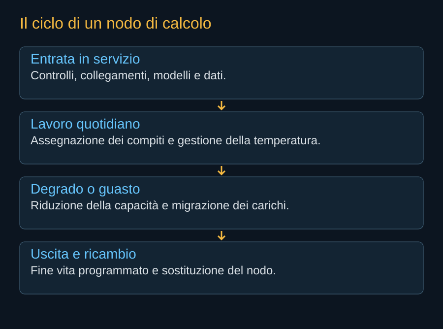

Un centro di calcolo terrestre ha corridoi, porte e persone che possono sostituire una scheda. Un nodo orbitale ha comandi, ridondanza e risorse residue. Il lavoro quotidiano deve essere progettato per questo ambiente. Aggiornare il software può essere possibile; rimuovere un componente difettoso non è una capacità da presumere.
Assegnare il lavoro
Il sistema deve conoscere la disponibilità dei nodi: processori, memoria, energia, temperatura e rete. Un algoritmo di assegnazione deve scegliere dove eseguire un compito senza saturare una risorsa che appare abbondante soltanto nella media. Il calcolo potrebbe essere rallentato per mantenere margini termici o per lasciare priorità a una manovra.
Per attività interattive conta anche il tempo di attesa. Una flotta con molti nodi può avere risorse libere lontano dai dati o senza il modello necessario. L’operatore deve mantenere copie e prevedere la domanda, evitando di trasferire grandi quantità di informazioni all’ultimo momento. Questa pianificazione è una parte del prodotto venduto al cliente.


Software che cambia, hardware che resta
Un aggiornamento può correggere un problema e introdurne un altro. In una rete spaziale è utile distribuire modifiche per gruppi, osservare il comportamento e mantenere una possibilità di ritorno alla versione precedente. Se il software controlla anche funzioni critiche del veicolo, la campagna deve preservare capacità di comando e modalità sicure.
Le generazioni diverse della flotta possono richiedere versioni differenti. Un cliente non deve conoscere ogni dettaglio del satellite, ma il servizio deve conoscere limiti e compatibilità. La standardizzazione delle interfacce permette di nascondere parte della complessità senza eliminarla dal controllo operativo.
Il guasto può lasciare una capacità parziale
Un nodo con una parte dei processori fuori servizio potrebbe continuare a lavorare. Una perdita di potenza potrebbe restringere i carichi disponibili. Un problema a un terminale potrebbe ridurre percorsi o capacità. L’operatore deve decidere quando mantenere il satellite, quando trasferire i lavori e quando preparare la dismissione.
Questa decisione combina costo e sicurezza. Continuare a spremere capacità da un veicolo degradato può consumare risorse necessarie per il fine vita. Per una costellazione molto grande, la gestione delle riserve dovrebbe essere una funzione ordinaria, collegata a soglie documentate. La convenienza del singolo lavoro non deve compromettere la possibilità di rimuovere il nodo.
Disponibilità e riserva
La potenza installata non equivale alla capacità garantita. Una parte della flotta può essere in prova, in trasferimento, in aggiornamento o in dismissione. Alcuni nodi devono restare disponibili per assorbire anomalie e variazioni della domanda. La differenza fra capacità nominale e servizio continuo va conteggiata prima di formulare promesse commerciali.
Lo stesso vale per la rete. Un incidente che coinvolga molti nodi insieme può essere più oneroso di molti guasti indipendenti. Un errore software comune, una configurazione sbagliata o un evento ambientale possono ridurre il valore della semplice replica. La resilienza richiede comprendere quali rischi siano condivisi.
La fine del servizio è un’operazione
Un satellite arrivato a fine vita deve uscire dal lavoro dei clienti, trasferire ciò che serve e completare la propria dismissione. SpaceX propone rientri mirati verso aree oceaniche e controllo durante il deorbiting. La capacità di farlo deve rimanere disponibile anche dopo anni di funzionamento e dopo alcuni guasti.
Il libro dovrà aggiornare il bilancio con tassi reali di disponibilità, recupero del lavoro e fine vita. Un servizio riuscito per qualche giorno è una prova utile. Un’infrastruttura richiede dimostrare come continui a funzionare quando parte delle sue macchine smette di essere nuova.
Fonti pubbliche e tracce
- SpaceX, risposta alla FCC datata 16 settembre 2026. Documento primario scaricato e letto. Incontro del 14 settembre; inviluppi a pagina 8, rientro a pagina 9. Dichiarazioni e modelli del richiedente, non decisione della FCC.
- NASA, effetti delle radiazioni sull’avionica. Dose totale, eventi singoli e tecniche di mitigazione. Non determina il tasso di guasto dei processori scelti per AI1.
- NVIDIA, SpaceXAI e prima generazione Starmind. 24 agosto 2026. Conferma l’adattamento di Vera Rubin NVL72; non pubblica una distinta completa del satellite.
- Secure World Foundation, commenti alla domanda SpaceX. 6 marzo 2026. Posizione del partecipante all’istruttoria su rischi cumulativi, trasparenza e autorizzazioni per fasi, non decisione FCC.